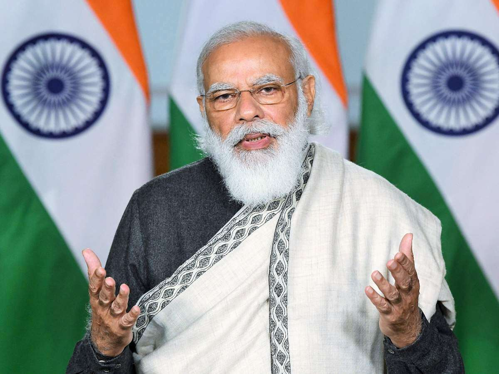

Narendra Damodardas Modi
-Honorable Prime Minister of India

Prime Minister Hon. Narendra Modi addressing the Nation.
A Sneak Peek into the life of Narendra Modi
- Was the Chief Minister of Gujrat for 15 years.
- In 2014 became the Prime Minister of India.
-
Brought revolutionary changes such as:
- Digital India
- Triple Talak
- Abolishing article 360
- Shows Tremendous respect for army and Mother-India. Reconstruction of various lost temples of India, including The Ram Mandir in Ayodhya.
- Promoted Yoga
- Promoted Cleanliness, Digitalization.